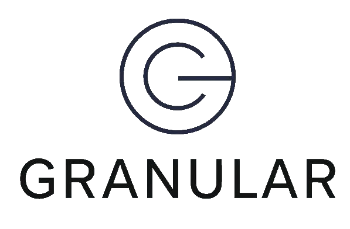
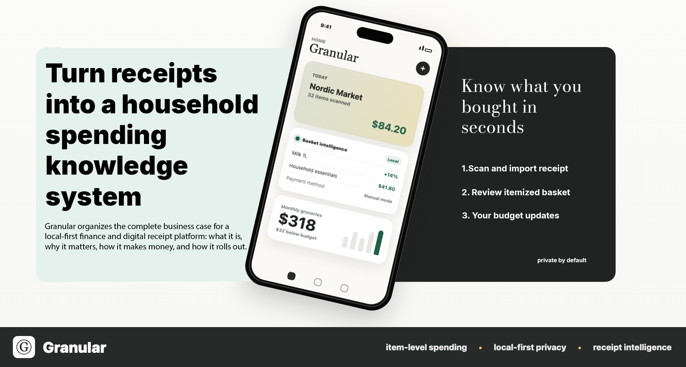

Direct itemization
Retailer and biller integrations should feed purchases and obligations into the app already structured.


Product Thesis
Retailer and biller integrations should feed purchases and obligations into the app already structured.
Receipt scans, imports, OCR review, and manual entry close the gaps where connectivity is missing.
Granular tracks groceries, utilities, mortgage, subscriptions, and cash so the record leaves as little out as possible.
Sensitive data stays off-chain and under user control while hashes, attestations, and consent receipts can be anchored later.
The launch proposition is monitoring, analysis, categorization, and verification, not payment execution or custody.
Launch Path
Granular starts as a privacy-first software platform for itemized purchases and obligations, proves value through visibility and control, then expands partner coverage once the core loop is trusted.
Review rollout strategy